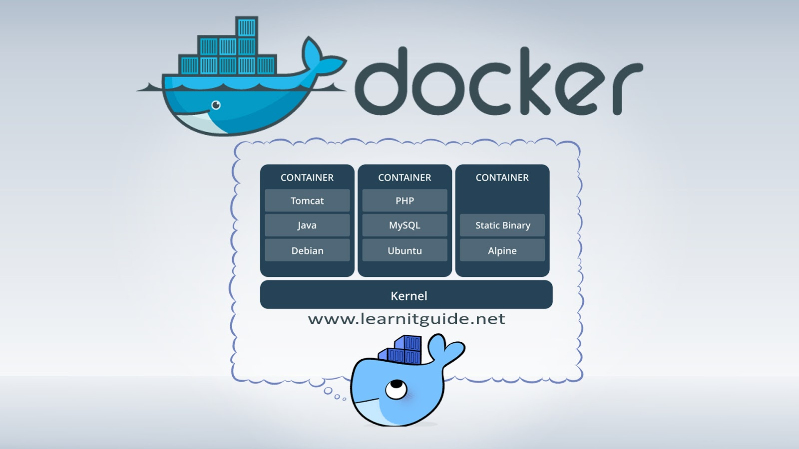

Tutorial: Docker Basics
Learn the fundamentals of containerization with Docker. Package your applications and dependencies easily.
By Upingi Team / Tutorial Level: Beginner
Learn the fundamentals of containerization with Docker. Package your applications and dependencies easily.
By Upingi Team / Tutorial Level: Beginner
Docker simplifies development and deployment by packaging applications and their environments into portable containers. This ensures consistency across different machines and stages (development, testing, production).
Understanding Docker is essential for modern software development workflows, DevOps practices, and efficient application deployment.
Let's dive into containerization!
Docker revolves around images (blueprints) and containers (running instances of images).
You've successfully pulled an image and run your first container!
To package your own applications, you create a `Dockerfile`. This is a text file containing instructions Docker uses to build an image.
Here's a breakdown of common instructions for a simple Node.js app (create a file named `Dockerfile`):
# Use an official Node.js runtime as a parent image
FROM node:18-alpine
# Set the working directory in the container
WORKDIR /usr/src/app
# Copy package.json and package-lock.json
COPY package*.json ./
# Install app dependencies
RUN npm install
# Bundle app source inside the Docker image
COPY . .
# Make port 8080 available to the world outside this container
EXPOSE 8080
# Define the command to run your app
CMD [ "node", "server.js" ]Build the image: Navigate to the directory containing your `Dockerfile` and run `docker build -t my-node-app .` (The `-t` tags the image with a name, and `.` indicates the build context is the current directory).
Run your custom container: Start a container from your new image: `docker run -p 4000:8080 -d my-node-app`. The `-p 4000:8080` maps port 4000 on your host to port 8080 in the container, and `-d` runs it in detached mode (background).
You've taken your first steps with Docker, understanding images, containers, and the basic commands to manage them. This foundation allows you to start containerizing applications.
Next steps could include: